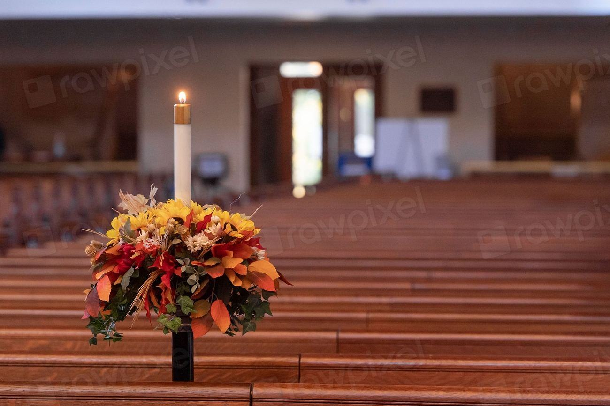

Tjänster
Vi är sexton anställda, varav fem med gesällbrev i stenhuggeri. Granit som vi inte bryter själva köper vi från grannbrott i Bovallstrand och Tossene, så att stenen till ett jobb i Bohuslän nästan alltid har färdats mindre än tre mil.
Vad ska stenen bli?

Gravvårdar
Hälften av det vi hugger är gravstenar till kyrkogårdar mellan Strömstad och Lysekil. Varje sten ritas tillsammans med familjen och huggs för hand i verkstaden.
Vi monterar själva och sätter stenen med dubbade fundament enligt kyrkogårdens föreskrifter.

Trappor och murar
Blocksteg i bohusgranit är nästan omöjliga att slita ut. Vi klyver dem ur samma bänk i berget så att färg och korn håller ihop genom hela trappan.
Ett vanligt villatrappsteg på 150 cm väger runt 300 kilo och sätts med vår egen kranbil.

Hamn och anläggning
Kajer, vågbrytare och strandskoningar i Sotenäs har huggits av Hallbergs i tre generationer. Vi tar ansvar från stenleverans till färdigsatt kaj.
Vi har egen pråm och arbetar från sjön när det inte går att komma fram med lastbil.

Inomhus
Bänkskivor, fönsterbänkar och golvplattor i den granit som syns utanför fönstret. Många av våra kunder vill ha samma sten inne som i klipporna vid huset.
Skivorna sågas i verkstaden och mäts upp med mall på plats av Olof eller hans kollega Ida.
Från berg till färdig sten
- 1

Samtal och skiss
Vi träffas i verkstaden eller hemma hos er och ritar upp stenen för hand, med mått och ytbehandling.
- 2

Välj blocket
Den som vill följer med till Klevbrottet och pekar ut sitt block. Annars väljer Olof efter färg och struktur.
- 3

Huggning
Stenen klyvs, sågas och huggs i verkstaden. En gravsten tar fyra till sex veckor, en trappa runt tre.
- 4

Montering
Vi kör ut med egen kranbil, sätter stenen och tar med allt spill tillbaka till brottet.
Gesäller, medlemskap och behörigheter
- Gesällbrev stenhuggeriFem av våra stenhuggare har gesällbrev utfärdat via Hantverksrådet.
- Sveriges StenindustriförbundMedlemmar sedan 1962 och följer förbundets riktlinjer för gravvårdsmontering.
- ID06Alla som arbetar på byggarbetsplatser och kajer har ID06-kort och elektronisk personalliggare.
- Arbete på vägMontagelaget har utbildning i Arbete på väg för jobb längs kommunala gator och hamnar.